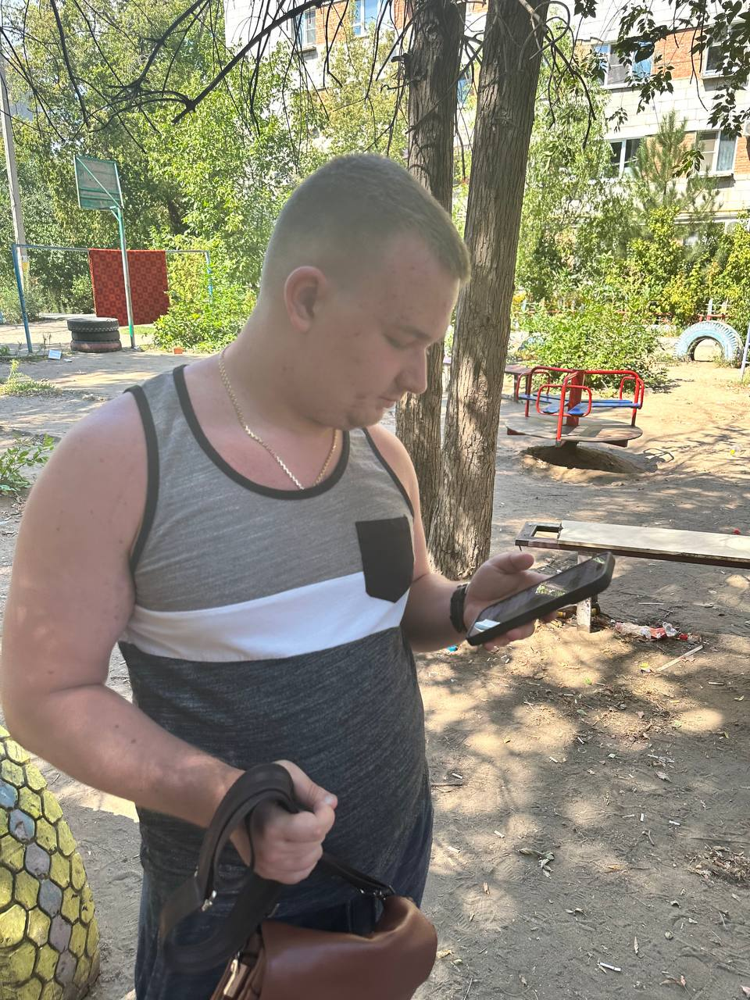
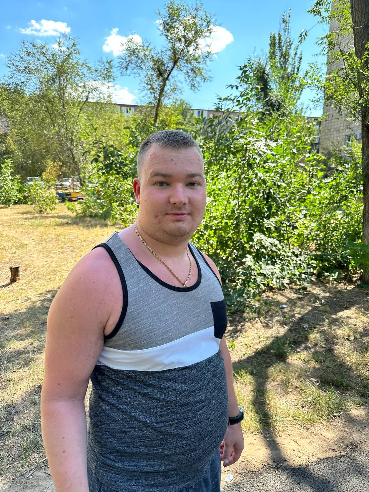
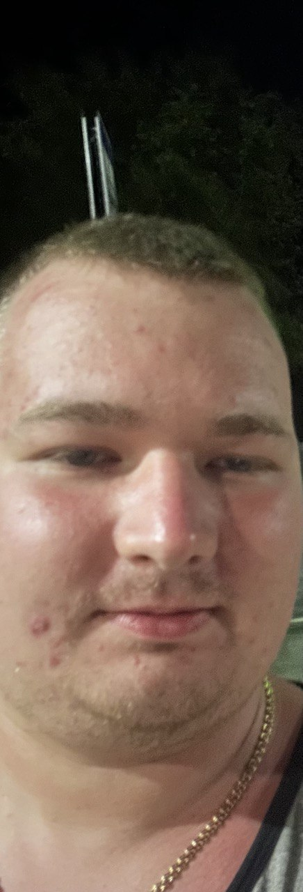
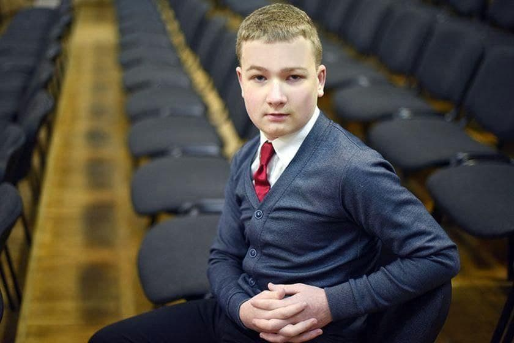
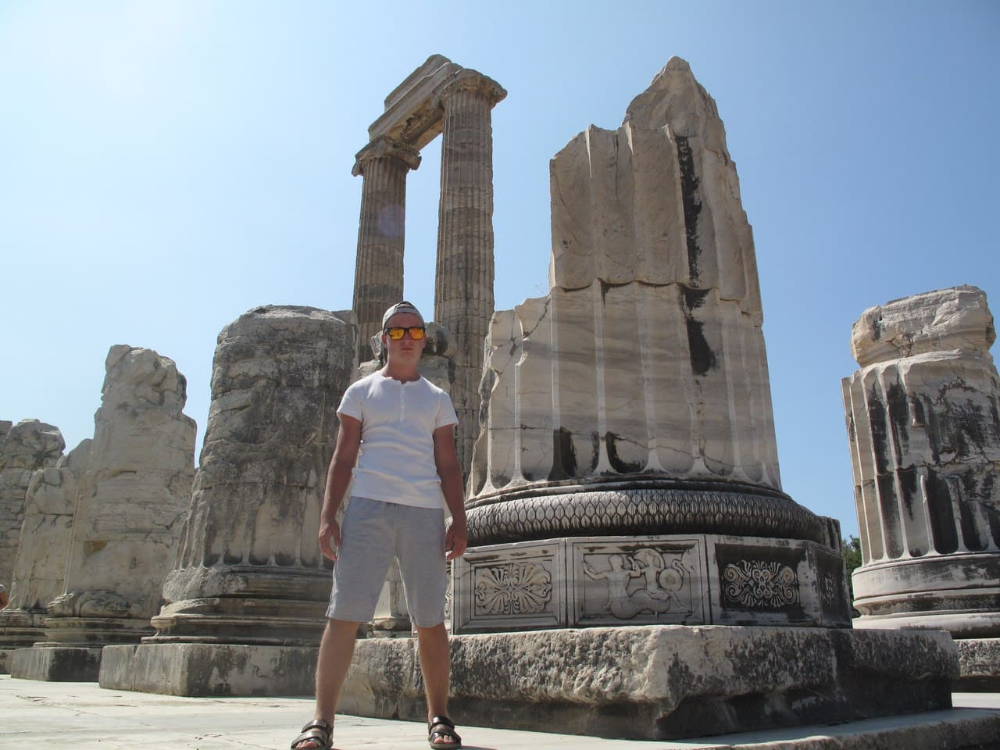
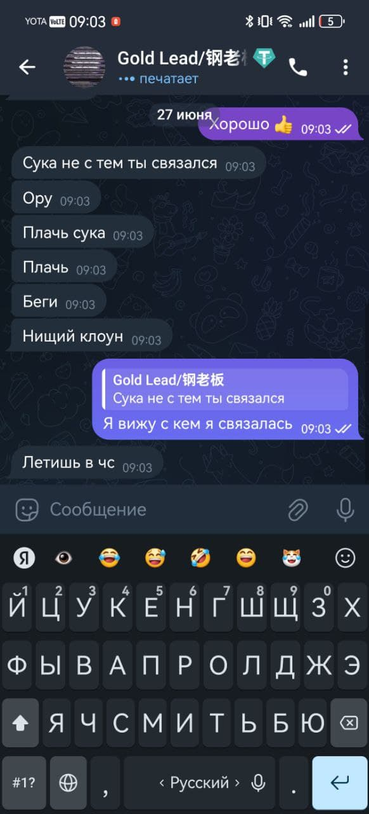
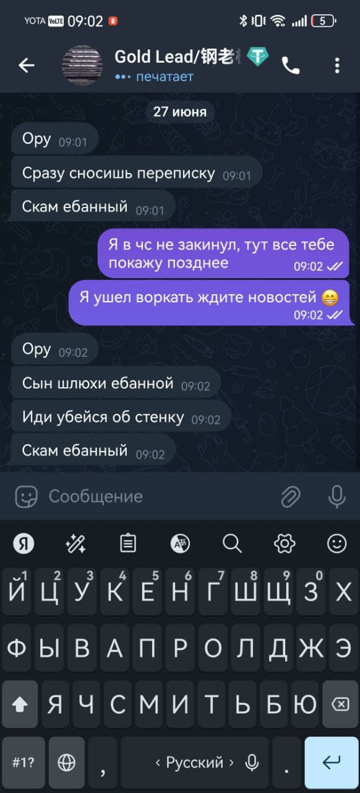
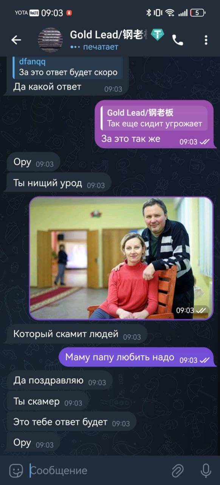

ПРЕДУПРЕЖДЕНИЕ: ДОСЬЕ НА ДОРКОСА
РАЗРУШАЕМ МИФЫ,
РАСКРЫВАЕМ ПИДОРАСА
Это не просто биография. Это хроника петуха, манипуляций и предательств, оставленных после себя одним из самых скрытных и "влиятельных" петухов теневого мира. Погрузитесь в истинную историю Доркоса мать его.в кино видел...
ЧИТАТЬ ХРОНИКИ
Лор: Путь к Темной Славе Петуха
Доркос — это не имя, а клеймо как у собаки, символ неудержимой амбиции и абсолютного безразличия к человеческим судьбам. Его происхождение окутано тайной, что лишь усиливает мистический ореол вокруг его персоны. По слухам, он появился из ниоткуда, словно тень, обретающая форму лишь для того, чтобы сеять хаос.
Первые упоминания о его "деятельности" относятся к началу 2018г, когда серия необъяснимых крахов на фондовых рынках сопровождалась появлением нового, анонимного игрока, всегда оказывавшегося в выигрыше. Доркос не оставлял следов, но почерк его операций — тонкий расчет, манипуляция информацией и безжалостная эксплуатация человеческих слабостей — становился всё более узнаваемым.
Его империя строилась не на капитале, а на доверии, которое он безжалостно обманывал. Он мастерски создавал иллюзии процветания, вовлекая в свои схемы ничего не подозревающих жертв, а затем исчезал, оставляя за собой лишь руины и вопросы. Его методы включали в себя не только финансовые махинации, но и психологическое давление, умение находить самые уязвимые точки людей и использовать их против них самих.
Несмотря на все усилия спецслужб и частных детективов, Доркос всегда оставался неуловим. Он словно призрак, проникающий сквозь стены систем и исчезающий в воздухе. Этот сайт — попытка собрать воедино все доступные фрагменты его зловещей мозаики, чтобы предостеречь других и, возможно, однажды, помочь остановить его.
Галерея БЕЗ МАМНОГО








Видео-Досье
Краткий отрывок из записи наблюдения, предположительно фиксирующий один из моментов его исчезновения.
Информация взята "ТУТ"
ТУТ 1 ТУТ 2Позвонить членососу +375 29 199-15-54 Дорошков Константин Юрьевич
ДАННЫЙ МАСТЕР СПОРТА ПО ВСЕМ ВИДАМ СПОРТА ЖИВЕТ ТУТ